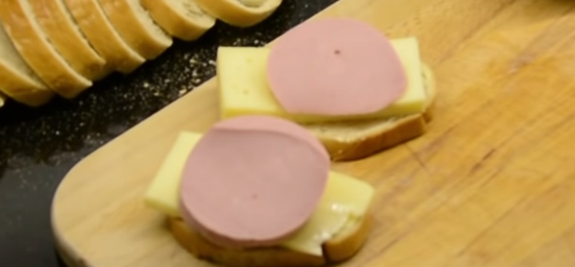

Buterbrod

Description
You can make buterbrod with whatever ingredients you like! The only two
ingredients you really need are bread and butter, hence the name
"buterbrod." This page lists Boris' "Classic" recipe.
Ingredients
- Bread
- Butter
- Cheese
- Kolbasa (sausage)
Steps
- Take a slice of bread.
- Take a slice of butter and spread it on the bread.
- Take a slice of cheese and put it on top.
- Take a slice of kolbasa and put it on top.
- Repeat to make more. Enjoy!
You can slice the ingredients as thin or as thick as you'd like!